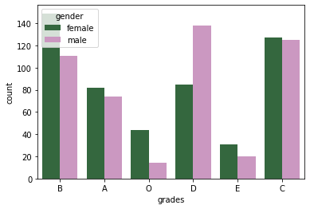

Project UAS
Project UAS#
import numpy as np
import pandas as pd
import matplotlib.pyplot as plt
import seaborn as sns
data = pd.read_csv("https://raw.githubusercontent.com/Irja-Multazamy/datamining/main/StudentsPerformance.csv")
print(data.shape)
data.head()
(1000, 8)
| gender | race/ethnicity | parental level of education | lunch | test preparation course | math score | reading score | writing score | |
|---|---|---|---|---|---|---|---|---|
| 0 | female | group B | bachelor's degree | standard | none | 72 | 72 | 74 |
| 1 | female | group C | some college | standard | completed | 69 | 90 | 88 |
| 2 | female | group B | master's degree | standard | none | 90 | 95 | 93 |
| 3 | male | group A | associate's degree | free/reduced | none | 47 | 57 | 44 |
| 4 | male | group C | some college | standard | none | 76 | 78 | 75 |
data.tail()
| gender | race/ethnicity | parental level of education | lunch | test preparation course | math score | reading score | writing score | |
|---|---|---|---|---|---|---|---|---|
| 995 | female | group E | master's degree | standard | completed | 88 | 99 | 95 |
| 996 | male | group C | high school | free/reduced | none | 62 | 55 | 55 |
| 997 | female | group C | high school | free/reduced | completed | 59 | 71 | 65 |
| 998 | female | group D | some college | standard | completed | 68 | 78 | 77 |
| 999 | female | group D | some college | free/reduced | none | 77 | 86 | 86 |
data.info()
<class 'pandas.core.frame.DataFrame'>
RangeIndex: 1000 entries, 0 to 999
Data columns (total 8 columns):
# Column Non-Null Count Dtype
--- ------ -------------- -----
0 gender 1000 non-null object
1 race/ethnicity 1000 non-null object
2 parental level of education 1000 non-null object
3 lunch 1000 non-null object
4 test preparation course 1000 non-null object
5 math score 1000 non-null int64
6 reading score 1000 non-null int64
7 writing score 1000 non-null int64
dtypes: int64(3), object(5)
memory usage: 62.6+ KB
data.describe()
| math score | reading score | writing score | |
|---|---|---|---|
| count | 1000.00000 | 1000.000000 | 1000.000000 |
| mean | 66.08900 | 69.169000 | 68.054000 |
| std | 15.16308 | 14.600192 | 15.195657 |
| min | 0.00000 | 17.000000 | 10.000000 |
| 25% | 57.00000 | 59.000000 | 57.750000 |
| 50% | 66.00000 | 70.000000 | 69.000000 |
| 75% | 77.00000 | 79.000000 | 79.000000 |
| max | 100.00000 | 100.000000 | 100.000000 |
data.isnull().sum()
gender 0
race/ethnicity 0
parental level of education 0
lunch 0
test preparation course 0
math score 0
reading score 0
writing score 0
dtype: int64
# visualising the number of male and female in the dataset
data['gender'].value_counts(normalize = True)
data['gender'].value_counts(dropna = False).plot.bar(color = 'magenta')
plt.title('Comparison of Males and Females')
plt.xlabel('gender')
plt.ylabel('count')
plt.show()
# visualizing the different groups in the dataset
data['race/ethnicity'].value_counts(normalize = True)
data['race/ethnicity'].value_counts(dropna = False).plot.bar(color = 'cyan')
plt.title('Comparison of various groups')
plt.xlabel('Groups')
plt.ylabel('count')
plt.show()
data['race/ethnicity'].value_counts()
group C 319
group D 262
group B 190
group E 140
group A 89
Name: race/ethnicity, dtype: int64
# visualizing the differnt parental education levels
data['parental level of education'].value_counts(normalize = True)
data['parental level of education'].value_counts(dropna = False).plot.bar()
plt.title('Comparison of Parental Education')
plt.xlabel('Degree')
plt.ylabel('count')
plt.show()
# visualizing different types of lunch
data['lunch'].value_counts(normalize = True)
data['lunch'].value_counts(dropna = False).plot.bar(color = 'yellow')
plt.title('Comparison of different types of lunch')
plt.xlabel('types of lunch')
plt.ylabel('count')
plt.show()
# visualizing maths score
data['math score'].value_counts(normalize = True)
data['math score'].value_counts(dropna = False).plot.bar(figsize = (18, 10))
plt.title('Comparison of math scores')
plt.xlabel('score')
plt.ylabel('count')
plt.show()
# visualizing reading score score
data['reading score'].value_counts(normalize = True)
data['reading score'].value_counts(dropna = False).plot.bar(figsize = (18, 10), color = 'orange')
plt.title('Comparison of math scores')
plt.xlabel('score')
plt.ylabel('count')
plt.show()
# visualizing writing score
data['math score'].value_counts(normalize = True)
data['math score'].value_counts(dropna = False).plot.bar(figsize = (18, 10), color = 'pink')
plt.title('Comparison of math scores')
plt.xlabel('score')
plt.ylabel('count')
plt.show()
# gender vs race/etnicity
x = pd.crosstab(data['gender'], data['race/ethnicity'])
x.div(x.sum(1).astype(float), axis = 0).plot(kind = 'bar', stacked = True, figsize = (4, 4))
<matplotlib.axes._subplots.AxesSubplot at 0x7f411b092f90>
# comparison of race/ethnicity and parental level of education
x = pd.crosstab(data['race/ethnicity'], data['parental level of education'])
x.div(x.sum(1).astype(float), axis = 0).plot(kind = 'bar', stacked = 'True', figsize = (7, 4) )
<matplotlib.axes._subplots.AxesSubplot at 0x7f411b33acd0>
# comparison of parental degree and test course
sns.countplot(x = 'parental level of education', data = data, hue = 'test preparation course', palette = 'dark')
plt.show()
# comparison of race/ethnicity and test preparation course
sns.countplot(x = 'race/ethnicity', data = data, hue = 'test preparation course', palette = 'bright')
plt.show()
# feature engineering on the data to visualize and solve the dataset more accurately
# setting a passing mark for the students to pass on the three subjects individually
passmarks = 40
# creating a new column pass_math, this column will tell us whether the students are pass or fail
data['pass_math'] = np.where(data['math score']< passmarks, 'Fail', 'Pass')
data['pass_math'].value_counts(dropna = False).plot.bar(color = 'black', figsize = (5, 3))
plt.title('Comparison of students passed or failed in maths')
plt.xlabel('status')
plt.ylabel('count')
plt.show()
data['pass_math'].value_counts()
Pass 960
Fail 40
Name: pass_math, dtype: int64
# creating a new column pass_math, this column will tell us whether the students are pass or fail
data['pass_reading'] = np.where(data['reading score']< passmarks, 'Fail', 'Pass')
data['pass_reading'].value_counts(dropna = False).plot.bar(color = 'brown', figsize = (5, 3))
plt.title('Comparison of students passed or failed in maths')
plt.xlabel('status')
plt.ylabel('count')
plt.show()
data['pass_reading'].value_counts(dropna = False)
Pass 974
Fail 26
Name: pass_reading, dtype: int64
# creating a new column pass_math, this column will tell us whether the students are pass or fail
data['pass_writing'] = np.where(data['writing score']< passmarks, 'Fail', 'Pass')
data['pass_writing'].value_counts(dropna = False).plot.bar(color = 'blue', figsize = (5, 3))
plt.title('Comparison of students passed or failed in maths')
plt.xlabel('status')
plt.ylabel('count')
plt.show()
# computing the total score for each student
data['total_score'] = data['math score'] + data['reading score'] + data['writing score']
data['total_score'].value_counts(normalize = True)
data['total_score'].value_counts(dropna = True).plot.bar(color = 'cyan', figsize = (40, 8))
plt.title('comparison of total score of all the students')
plt.xlabel('total score scored by the students')
plt.ylabel('count')
plt.show()
# computing percentage for each of the students
# importing math library to use ceil
from math import *
data['percentage'] = data['total_score']/3
for i in range(0, 1000):
data['percentage'][i] = ceil(data['percentage'][i])
data['percentage'].value_counts(normalize = True)
data['percentage'].value_counts(dropna = False).plot.bar(figsize = (16, 8), color = 'red')
plt.title('Comparison of percentage scored by all the students')
plt.xlabel('percentage score')
plt.ylabel('count')
plt.show()
/usr/local/lib/python3.7/dist-packages/ipykernel_launcher.py:8: SettingWithCopyWarning:
A value is trying to be set on a copy of a slice from a DataFrame
See the caveats in the documentation: https://pandas.pydata.org/pandas-docs/stable/user_guide/indexing.html#returning-a-view-versus-a-copy

# checking which student is fail overall
data['status'] = data.apply(lambda x : 'Fail' if x['pass_math'] == 'Fail' or
x['pass_reading'] == 'Fail' or x['pass_writing'] == 'Fail'
else 'pass', axis = 1)
data['status'].value_counts(dropna = False).plot.bar(color = 'gray', figsize = (3, 3))
plt.title('overall results')
plt.xlabel('status')
plt.ylabel('count')
plt.show()
# Assigning grades to the grades according to the following criteria :
# 0 - 40 marks : grade E
# 41 - 60 marks : grade D
# 60 - 70 marks : grade C
# 70 - 80 marks : grade B
# 80 - 90 marks : grade A
# 90 - 100 marks : grade O
def getgrade(percentage, status):
if status == 'Fail':
return 'E'
if(percentage >= 90):
return 'O'
if(percentage >= 80):
return 'A'
if(percentage >= 70):
return 'B'
if(percentage >= 60):
return 'C'
if(percentage >= 40):
return 'D'
else :
return 'E'
data['grades'] = data.apply(lambda x: getgrade(x['percentage'], x['status']), axis = 1 )
data['grades'].value_counts()
B 260
C 252
D 223
A 156
O 58
E 51
Name: grades, dtype: int64
# plotting a pie chart for the distribution of various grades amongst the students
labels = ['Grade 0', 'Grade A', 'Grade B', 'Grade C', 'Grade D', 'Grade E']
sizes = [58, 156, 260, 252, 223, 51]
colors = ['yellow', 'gold', 'lightskyblue', 'lightcoral', 'pink', 'cyan']
explode = (0.0001, 0.0001, 0.0001, 0.0001, 0.0001, 0.0001)
patches, texts = plt.pie(sizes, colors=colors, shadow=True, startangle=90)
plt.legend(patches, labels)
plt.axis('equal')
plt.tight_layout()
plt.show()
# comparison parent's degree and their corresponding grades
x = pd.crosstab(data['parental level of education'], data['grades'])
x.div(x.sum(1).astype(float), axis = 0).plot(kind = 'bar', stacked = True, figsize = (9, 5))
<matplotlib.axes._subplots.AxesSubplot at 0x7f411b1d82d0>
# for better visualization we will plot it again using seaborn
sns.countplot(x = data['parental level of education'], data = data, hue = data['grades'], palette = 'pastel')
plt.show()
# comparing the distribution of grades among males and females
sns.countplot(x = data['grades'], data = data, hue = data['gender'], palette = 'cubehelix')
#sns.palplot(sns.dark_palette('purple'))
plt.show()

data.head()
| gender | race/ethnicity | parental level of education | lunch | test preparation course | math score | reading score | writing score | pass_math | pass_reading | pass_writing | total_score | percentage | status | grades | |
|---|---|---|---|---|---|---|---|---|---|---|---|---|---|---|---|
| 0 | female | group B | bachelor's degree | standard | none | 72 | 72 | 74 | Pass | Pass | Pass | 218 | 73.0 | pass | B |
| 1 | female | group C | some college | standard | completed | 69 | 90 | 88 | Pass | Pass | Pass | 247 | 83.0 | pass | A |
| 2 | female | group B | master's degree | standard | none | 90 | 95 | 93 | Pass | Pass | Pass | 278 | 93.0 | pass | O |
| 3 | male | group A | associate's degree | free/reduced | none | 47 | 57 | 44 | Pass | Pass | Pass | 148 | 50.0 | pass | D |
| 4 | male | group C | some college | standard | none | 76 | 78 | 75 | Pass | Pass | Pass | 229 | 77.0 | pass | B |
data.describe()
| math score | reading score | writing score | total_score | percentage | |
|---|---|---|---|---|---|
| count | 1000.00000 | 1000.000000 | 1000.000000 | 1000.000000 | 1000.000000 |
| mean | 66.08900 | 69.169000 | 68.054000 | 203.312000 | 68.105000 |
| std | 15.16308 | 14.600192 | 15.195657 | 42.771978 | 14.258095 |
| min | 0.00000 | 17.000000 | 10.000000 | 27.000000 | 9.000000 |
| 25% | 57.00000 | 59.000000 | 57.750000 | 175.000000 | 59.000000 |
| 50% | 66.00000 | 70.000000 | 69.000000 | 205.000000 | 69.000000 |
| 75% | 77.00000 | 79.000000 | 79.000000 | 233.000000 | 78.000000 |
| max | 100.00000 | 100.000000 | 100.000000 | 300.000000 | 100.000000 |
from sklearn.preprocessing import LabelEncoder
# creating an encoder
le = LabelEncoder()
# label encoding for test preparation course
data['test preparation course'] = le.fit_transform(data['test preparation course'])
data['test preparation course'].value_counts()
1 642
0 358
Name: test preparation course, dtype: int64
# label encoding for lunch
data['lunch'] = le.fit_transform(data['lunch'])
data['lunch'].value_counts()
1 645
0 355
Name: lunch, dtype: int64
# label encoding for race/ethnicity
# we have to map values to each of the categories
data['race/ethnicity'] = data['race/ethnicity'].replace('group A', 1)
data['race/ethnicity'] = data['race/ethnicity'].replace('group B', 2)
data['race/ethnicity'] = data['race/ethnicity'].replace('group C', 3)
data['race/ethnicity'] = data['race/ethnicity'].replace('group D', 4)
data['race/ethnicity'] = data['race/ethnicity'].replace('group E', 5)
data['race/ethnicity'].value_counts()
3 319
4 262
2 190
5 140
1 89
Name: race/ethnicity, dtype: int64
# label encoding for parental level of education
data['parental level of education'] = le.fit_transform(data['parental level of education'])
data['parental level of education'].value_counts()
4 226
0 222
2 196
5 179
1 118
3 59
Name: parental level of education, dtype: int64
# label encoding for gender
data['gender'] = le.fit_transform(data['gender'])
data['gender'].value_counts()
0 518
1 482
Name: gender, dtype: int64
# label encoding for pass_math
data['pass_math'] = le.fit_transform(data['pass_math'])
data['pass_math'].value_counts()
1 960
0 40
Name: pass_math, dtype: int64
# label encoding for pass_reading
data['pass_reading'] = le.fit_transform(data['pass_reading'])
data['pass_reading'].value_counts()
1 974
0 26
Name: pass_reading, dtype: int64
# label encoding for pass_writing
data['pass_writing'] = le.fit_transform(data['pass_writing'])
data['pass_writing'].value_counts()
1 968
0 32
Name: pass_writing, dtype: int64
# label encoding for status
data['status'] = le.fit_transform(data['status'])
data['status'].value_counts()
1 949
0 51
Name: status, dtype: int64
# label encoding for grades
# we have to map values to each of the categories
data['grades'] = data['grades'].replace('O', 0)
data['grades'] = data['grades'].replace('A', 1)
data['grades'] = data['grades'].replace('B', 2)
data['grades'] = data['grades'].replace('C', 3)
data['grades'] = data['grades'].replace('D', 4)
data['grades'] = data['grades'].replace('E', 5)
data['race/ethnicity'].value_counts()
3 319
4 262
2 190
5 140
1 89
Name: race/ethnicity, dtype: int64
data.shape
(1000, 15)
# splitting the dependent and independent variables
x = data.iloc[:,:8]
y = data.iloc[:,8]
print(x.shape)
print(y.shape)
(1000, 8)
(1000,)
# splitting the dataset into training and test sets
from sklearn.model_selection import train_test_split
x_train, x_test, y_train, y_test = train_test_split(x, y, test_size = 0.25, random_state = 45)
print(x_train.shape)
print(y_train.shape)
print(x_test.shape)
print(y_test.shape)
(750, 8)
(750,)
(250, 8)
(250,)
# importing the MinMaxScaler
from sklearn.preprocessing import MinMaxScaler
# creating a scaler
mm = MinMaxScaler()
# feeding the independent variable into the scaler
x_train = mm.fit_transform(x_train)
x_test = mm.transform(x_test)
# applying principal components analysis
from sklearn.decomposition import PCA
# creating a principal component analysis model
#pca = PCA(n_components = None)
# feeding the independent variables to the PCA model
#x_train = pca.fit_transform(x_train)
#x_test = pca.transform(x_test)
# visualising the principal components that will explain the highest share of variance
#explained_variance = pca.explained_variance_ratio_
#print(explained_variance)
# creating a principal component analysis model
#pca = PCA(n_components = 2)
# feeding the independent variables to the PCA model
#x_train = pca.fit_transform(x_train)
#x_test = pca.transform(x_test)
Modelling
Random Forest
from sklearn.ensemble import RandomForestClassifier
# creating a model
model = RandomForestClassifier()
# feeding the training data to the model
model.fit(x_train, y_train)
# predicting the x-test results
y_pred = model.predict(x_test)
# calculating the accuracies
print("Training Accuracy :", model.score(x_train, y_train))
print("Testing Accuracy :", model.score(x_test, y_test))
Training Accuracy : 1.0
Testing Accuracy : 0.996
import joblib
joblib.dump(model,'rforest')
['rforest']
Decision Tree
from sklearn.tree import DecisionTreeClassifier
# creating a model
model1 = DecisionTreeClassifier()
# feeding the training data to the model
model1.fit(x_train, y_train)
# predicting the x-test results
y_pred = model1.predict(x_test)
# calculating the accuracies
print("Training Accuracy :", model1.score(x_train, y_train))
print("Testing Accuracy :", model1.score(x_test, y_test))
Training Accuracy : 1.0
Testing Accuracy : 1.0
joblib.dump(model1,'dtree')
['dtree']
Naive Bayes
from sklearn.naive_bayes import GaussianNB
# creating a model
model2 = DecisionTreeClassifier()
# feeding the training data to the model
model2.fit(x_train, y_train)
# predicting the x-test results
y_pred = model2.predict(x_test)
# calculating the accuracies
print("Training Accuracy :", model2.score(x_train, y_train))
print("Testing Accuracy :", model2.score(x_test, y_test))
Training Accuracy : 1.0
Testing Accuracy : 1.0
joblib.dump(model2,'bayes')
['bayes']
# printing the confusion matrix
from sklearn.metrics import confusion_matrix
# creating a confusion matrix
cm = confusion_matrix(y_test, y_pred)
# printing the confusion matrix
print(cm)
[[ 10 0]
[ 0 240]]